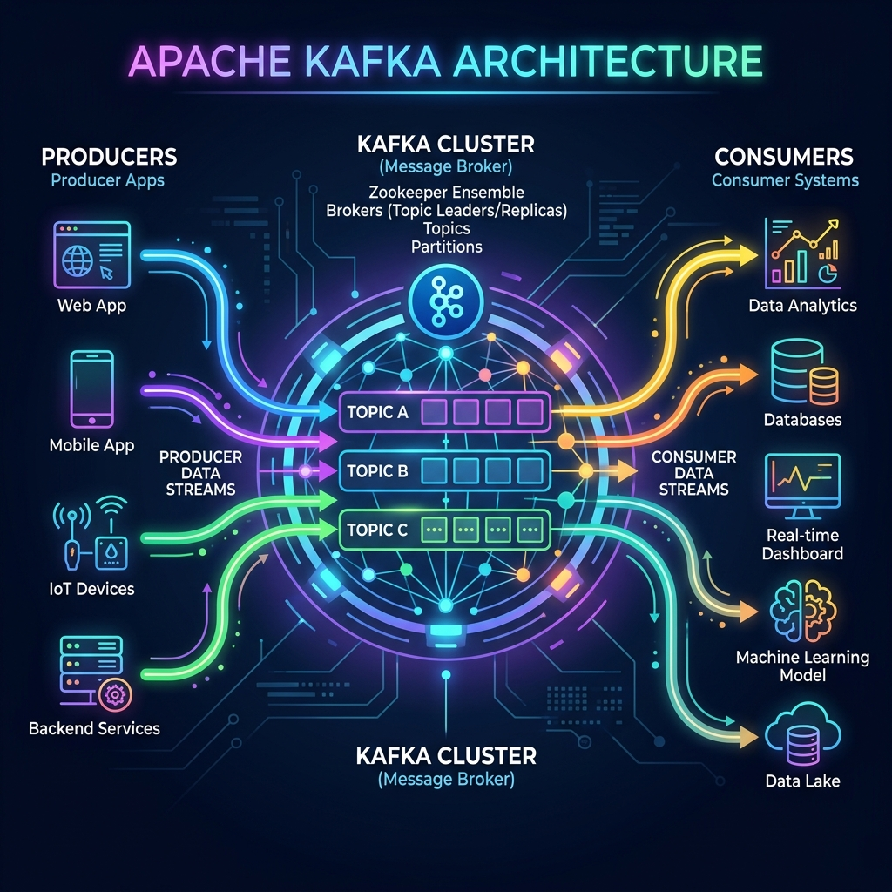

In modern software engineering, millions of events happen every second. A user clicks a button, a sensor measures temperature, or a bank transfer gets approved. Managing these constant streams of data in real time is a huge challenge. That is where Apache Kafka comes in.
Originally developed by LinkedIn and later open-sourced under the Apache Software Foundation, Apache Kafka is a distributed event streaming platform. It acts as the nervous system for digital architectures, allowing systems to ingest, store, and process continuous streams of data reliably and at an enormous scale.

Imagine a traditional messaging system like an envelope-based mailbox. Once you take the mail out and read it, it's gone from the box forever.
Kafka is different. Think of it as a massive, infinite digital bulletin board. Whenever a service has new information (like "User purchased a shirt"), it pins the notice to the board. Any other service that needs this information can walk up, read it, and take notes. The notice stays pinned to the board so that other services can read it later, or the same service can re-read it if they forget something.
Why is Apache Kafka So Popular?
Before Kafka, applications communicated directly with each other. If system A needed to send data to system B, C, and D, it had to write custom connections to all of them. This quickly created a messy "spaghetti architecture." Kafka solves this by decoupling systems: producers just write to Kafka, and consumers read from Kafka.
Here are the key reasons why modern companies rely on Kafka:
- Decoupling: Creators of data (Producers) and users of data (Consumers) are completely independent.
- Durability: Kafka writes messages to physical disks and replicates them across multiple servers so they are never lost.
- Scalability: You can start with one server and scale to hundreds of servers handling trillions of messages daily.
- Fault Tolerance: If one server crashes, other servers in the cluster step in automatically with zero downtime.
- Message Replay: Consumers can rewind and re-read historical data whenever they need to.
How Kafka Differs from Traditional Queues
Traditional message brokers (like RabbitMQ) delete messages as soon as the recipient acknowledges them. Kafka is a distributed commit log. It acts as an append-only ledger on disk. It keeps messages for hours, days, or years based on your business requirements, enabling powerful features like data auditing, event sourcing, and analytical processing.
Conclusion
Apache Kafka has transitioned from a niche logging tool at LinkedIn to the standard backbone of modern real-time data pipelines. Whether you are building financial transactions engines, tracking ride-sharing drivers, or aggregating application metrics, Kafka provides the scale and safety you need.